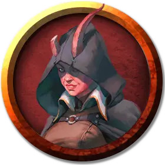

Ардра Желчь
Fel Ardra
Средний Гуманоид (Тифлинг), хаотично-нейтральный, именной НИП

Класс Доспеха 13 (кожаный доспех)
Хиты 33 (6к8 + 6)
Скорость 30 футов
| мод | спас | ||
|---|---|---|---|
| СИЛ | 11 | +0 | +0 |
| ЛОВ | 14 | +2 | +2 |
| ТЕЛ | 12 | +1 | +1 |
| мод | спас | ||
|---|---|---|---|
| ИНТ | 10 | +0 | +0 |
| МДР | 13 | +1 | +1 |
| ХАР | 14 | +2 | +2 |
Навыки Обман +4, Религия +2, Убеждение +4
Чувства пассивное Восприятие 11
Языки Все
Опасность 2 (450 опыта)
Бонус мастерства +2
Среда обитания Город
Особенности
Языки. Ардра знает один любой язык, обычно Общий.
Темная преданность. Ардра совершает с преимуществом спасброски от испуга и очарования.
Использование заклинаний. . Ардра является заклинателем 4-го уровня. Её базовой характеристикой является Мудрость (Сл спасброска от заклинания 11, +3 к попаданию атаками заклинаниями). У него подготовлены следующие заклинания жреца:
• Заговоры (неограниченно): свет [light], священное пламя [sacred flame], чудотворство [thaumaturgy];
• 1 уровень (4 ячейки): нанесение ран [inflict wounds], приказ [command], щит веры [shield of faith];
• 2 уровень (3 ячейки): божественное оружие [spiritual weapon], удержание личности [hold person];
Действия
Мультиатака. Ардра совершает две рукопашные атаки.
Кинжал. . Рукопашная или дальнобойная атака оружием: +4 к попаданию, досягаемость 5 футов или дистанция 20/60 футов, одно существо. Попадание: 4 (1к4 + 2) колющего урона.
Описание
Ардра Желчь — способная рулевая, которая в иных обстоятельствах могла бы обеспечить себе вполне комфортную жизнь, предлагая свои услуги другим капитанам. Однако, как это иногда бывает, тифлинг занялась контрабандой, чтобы заработать достаточно монет и выкупить себя из инфернального контракта, который она заключила много лет назад.
И хотя Крукс не одобряет методы ведения дел Желчи, он относится к ней с особой нежностью с тех пор, как они встретились. Тифлинг рассматривает их отношения исключительно с точки зрения выгоды, в то время как гифф убеждён, что у Ардры золотое сердце. Поэтому он продолжает пытаться убедить её покончить с контрабандой. Теперь, с приходом группы, Крукс предвидит великое приключение и с помощью персонажей надеется убедить Желчь присоединиться.
В свою очередь, ей безразличны злоключения группы. Она утверждает, что если вернуть свой корабль прямо сейчас, ему придется вернуть ей остаток аренды — 400 зм. Гифф готов заплатить. Однако Желчь чувствует отчаяние Крукса, поэтому она настаивает на том, чтобы он компенсировал упущенную выгоду от следующей работы — ещё 3000 зм. Персонаж, преуспевший в проверке Мудрости (Проницательность) Сл 15, понимает, что Ардра блефует: глубоко внутри она знает, что ей сильно повезёт получить хотя бы 1000 зм. Желчь всегда подозревала, что у Крукса денег куры не клюют. Поэтому её совсем не мучает совесть за попытку ободрать его до нитки. На самом деле Крукс промотал большую часть своих денег. Он едва ли может позволить себе вернуть платёж Ардры, и уж тем более заплатить дополнительную сумму, которую она насчитала сверху.